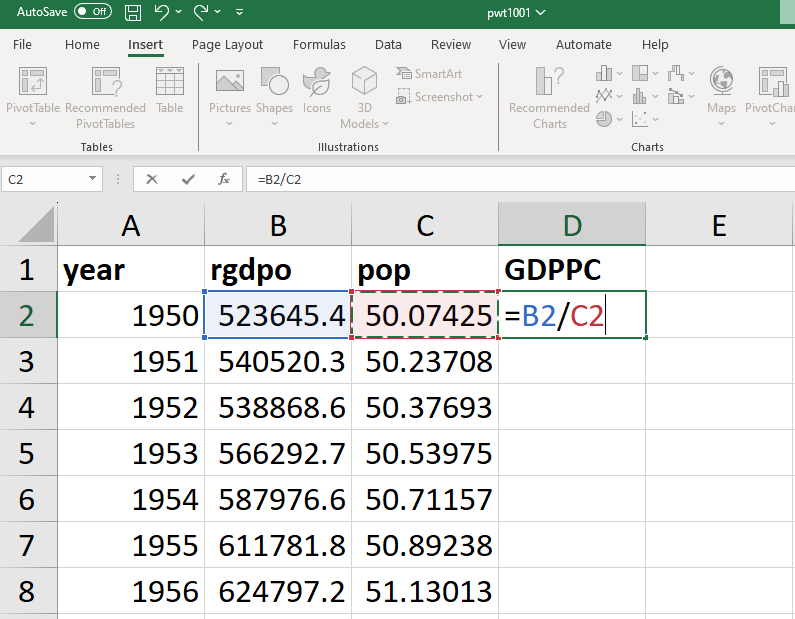
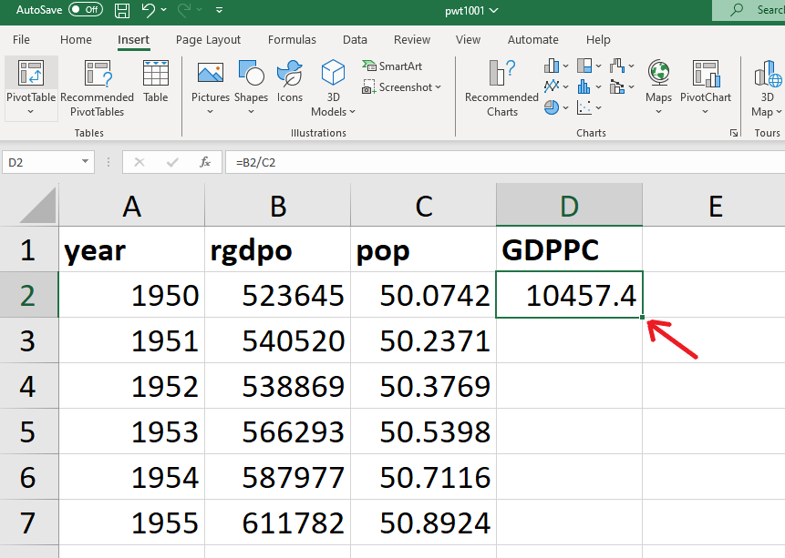
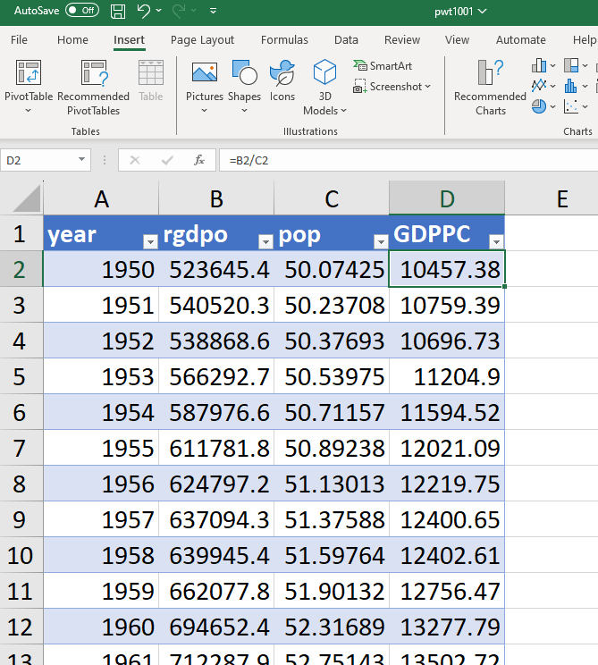
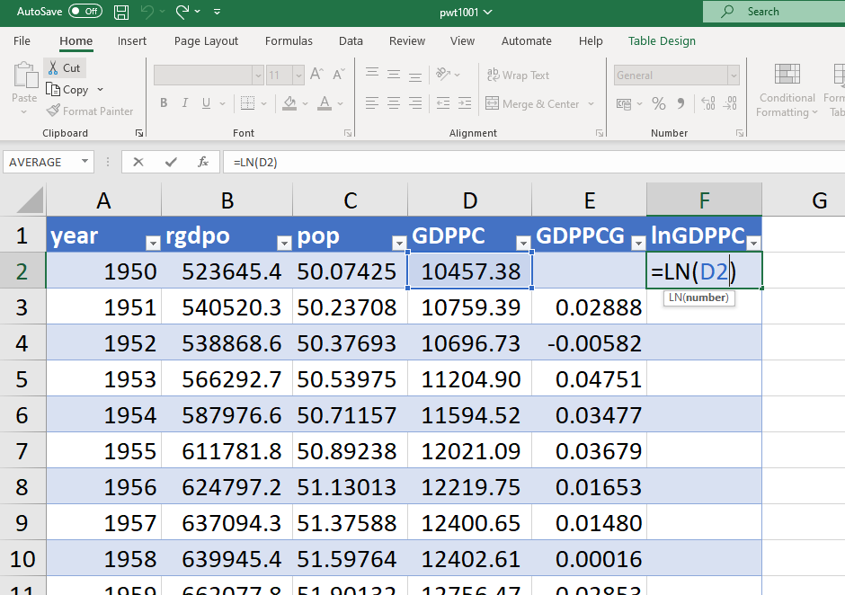
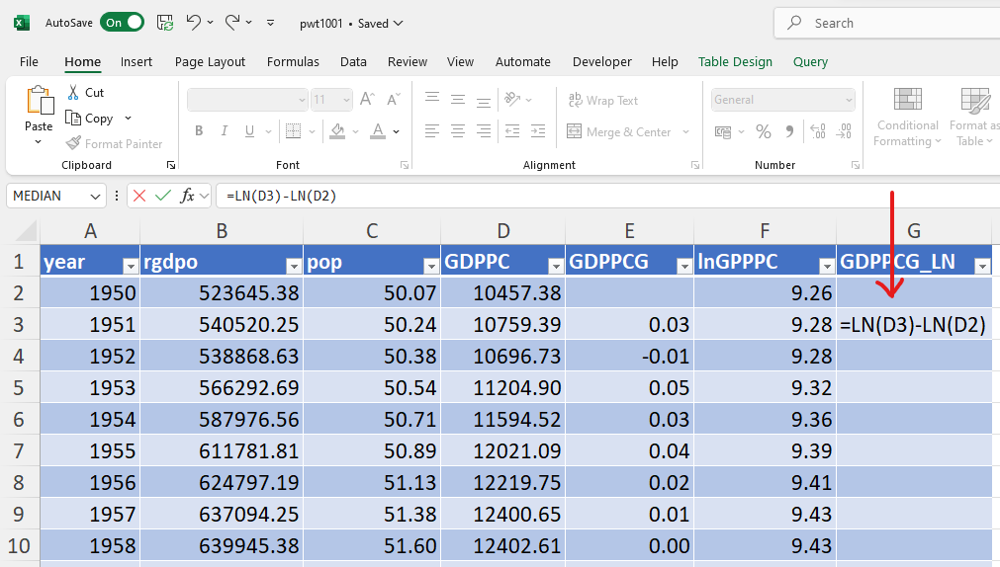
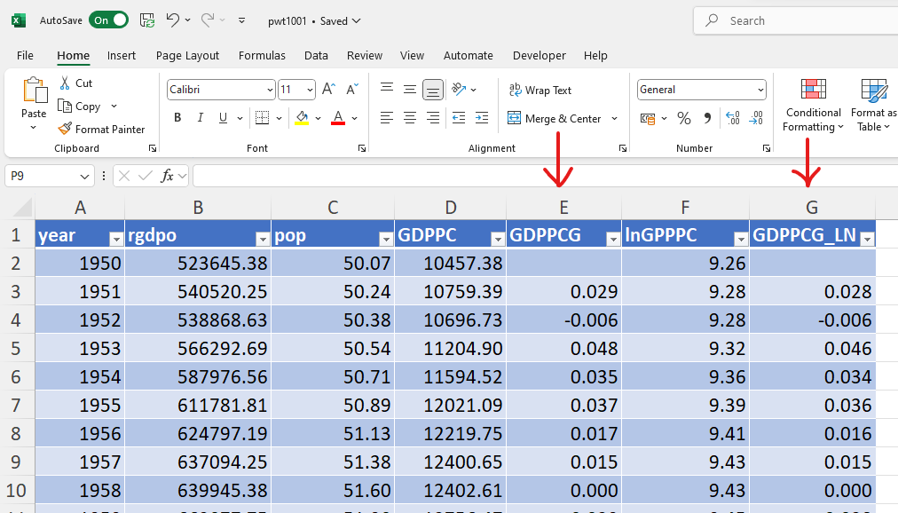

Chapter 3 Creating new variables
3.1 Generating new variables
Using the data on GDP and population for the United Kingdom in the “United Kingdom” sheet we can generate a series of values for UK GDP per capita. For this, we need to create a formula referring to values in other cells.
To calculate UK GDP per capita in 1950 we need to divide UK output (“rgdpo”) by UK population (“pop”). Select the cell where you want the result to appear (eg “D2”). The relevant formula for GDP per capita in 1950 is “=B2/C2”. “B2” is UK GDP in 1950, “C2” is UK population in 1950 and “/” indicates that you are dividing the former by the latter. Instead of writing “B2” and “C2” you may just click on the corresponding cells.

- To calculate UK GDP per capita in all subsequent years, we need to apply the same formula to all rows (representing years) in the dataset.
- To do this you can either copy and paste the formula in all subsequent cells in the D column or double click on the “+” in the bottom right corner of D2, or click on the “+” and drag it over all the subsequent cells in the D column (whatever works for you!).

- If the data is presented in a table (as below), the formula in “D2” will apply automatically to all rows in column D.

3.2 Calculating growth rates
Using the UK GDP per capita series, we can now create the series of annual growth rates of GDP per capita using the discrete time formula \(g_y = \frac{y_t}{y_{t-1}} -1\). For example, the annual growth rate of UK GDP per capita in 1951 is equal to the ratio of GDP per capita in 1951 (“D3”) and in 1950 (“D2”) minus 1.

Then copy the formula in all subsequent cells to generate the whole series of annual growth rates.
3.3 Using the natural logarithm function
To calculate a series for the natural logarithm of UK GDP per capita, use the LN() function:

Then copy the formula in all subsequent cells to generate the natural logarithm of GDP in all subsequent years. Important: to calculate the natural logarithm, do not use the LOG() function, which should only be used if you want to calculate the logarithm with a different base!
Using the natural logarithm function, we can calculate the annual growth rate using the continuous time formula: \(g_y = ln(y_t) - ln(y_{t-1})\). For example, the annual growth rate of UK GDP per capita in 1951 is equal to the natural logarithm of GDP per capita in 1951 minus the natural logarithm of GDP per capita in 1950.

Then copy the formula in all subsequent cells to generate the whole series of annual growth rates. Compare it with the growth rate calculated using the discrete time formula:

The two formulas yield similar (to 2 decimal points) but not perfectly identical estimates of the annual growth rates.